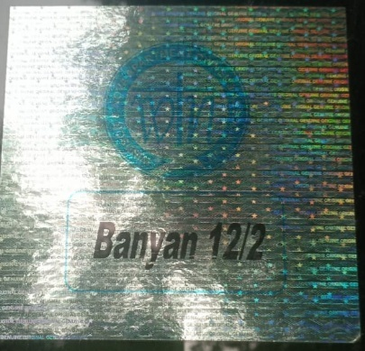

🚗 Vehicle Sticker Replacement – Resident Q&A 🛍️
नोट: इस प्रक्रिया का उद्देश्य ट्रैफिक और पार्किंग प्रबंधन को सुव्यवस्थित करना है। प्रत्येक वाहन पर फ्लैट नंबर का उल्लेख अनिवार्य है। यदि आपके पुराने स्टीकर पर पहले से ही फ्लैट नंबर है, तो नया स्टिकर लेना अनिवार्य नहीं है।
यदि आपके पास नीचे दिखाया गया जैसा पुराना स्टिकर है जिसमें फ्लैट नंबर स्पष्ट रूप से लिखा है,
तो वह अभी भी मान्य माना जाएगा और नया स्टिकर लेना अनिवार्य नहीं है:

Q1. पुराने पार्क प्लस स्टिकर का क्या होगा?
A. पार्क प्लस की सुविधा बंद हो चुकी है, इसलिए पुराने स्टिकर अब वैध नहीं हैं। यह एक वन-टाइम फुल रिप्लेसमेंट ड्राइव है, जिसमें सभी वाहनों को नया स्टिकर दिया जाएगा।
Q2. हमने पहले ₹500 देकर स्टिकर लिया था, अब क्या फिर से पैसा देना होगा?
A. नहीं, यह नया स्टिकर पूरी तरह से निःशुल्क है। सभी रेज़िडेंट्स को बिना किसी शुल्क के नया स्टिकर AOA द्वारा प्रदान किया जाएगा।
Q3. अगर भविष्य में AOA बदल गई तो फिर से स्टिकर बदलेंगे क्या?
A. यह स्टिकर AOA का सामान्य पहचान स्टिकर है जो सुरक्षा की दृष्टि से लागू किया जा रहा है। भविष्य में कोई बदलाव केवल विशेष परिस्थितियों में सामूहिक निर्णय द्वारा ही होगा।
Q4. पुराने स्टिकर को हटाना जरूरी है क्या?
A. यदि पुराने स्टिकर पर फ्लैट नंबर नहीं लिखा है, तो उसे हटाना अनिवार्य है और नया स्टिकर लगाना होगा। इससे भ्रम की स्थिति नहीं बनेगी और सुरक्षा स्टाफ को पहचान में आसानी होगी। यदि फ्लैट नंबर पहले से लिखा है, तो पुराने स्टिकर को हटाना जरूरी नहीं है।
Q5. अगर कोई स्टिकर नहीं लगाए तो क्या होगा?
A. गार्ड केवल उन्हीं वाहनों को सहज एंट्री देंगे जिनमें नया स्टिकर स्पष्ट रूप से लगा होगा।
Q6. फॉर्म कहां से मिलेगा?
Q7. कौन-कौन से डॉक्युमेंट्स लगेंगे?
A. RC और पहचान पत्र (जैसे आधार)। अगर इनमें वर्तमान पता नहीं है तो रजिस्ट्री का पहला पेज संलग्न करें जिसमें नाम और पता हो।
Q8. क्या किरायेदार भी स्टिकर ले सकते हैं?
A. हाँ, किरायेदार AOA में पंजीकरण के बाद डॉक्युमेंट्स देकर स्टिकर ले सकते हैं।
Q9. क्या यह केवल कार के लिए है या दोपहिया के लिए भी?
A. यह स्टिकर कार और दोपहिया दोनों वाहनों के लिए है।
Q10. कितने दिनों तक स्टिकर मिलेंगे?
A. स्टिकर वितरण 25 जून से शुरू होगा और आगामी हफ्तों में जारी रहेगा।
Q11. क्या ड्राइवर भी स्टिकर ले सकता है?
A. हाँ, स्टिकर फ्लैट ओनर के नाम से मिलेंगे और ड्राइवर या अधिकृत व्यक्ति सही दस्तावेजों के साथ स्टिकर ले सकता है।